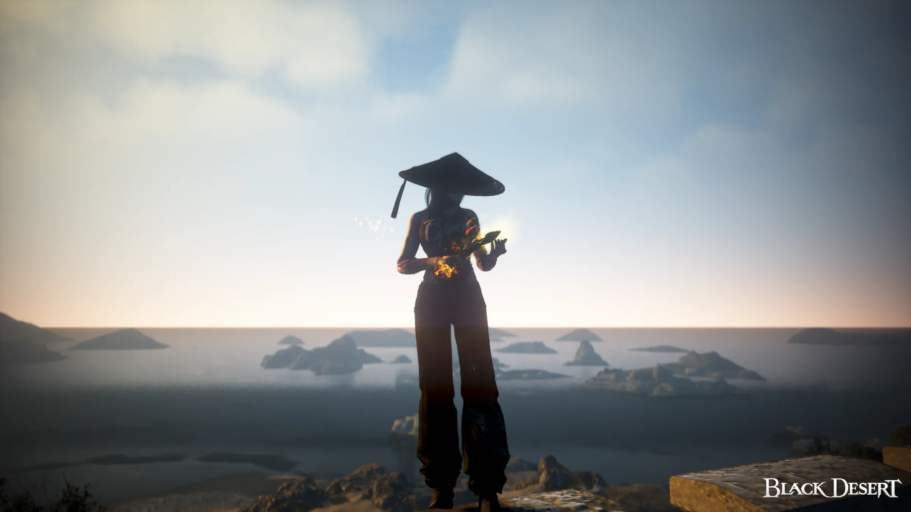
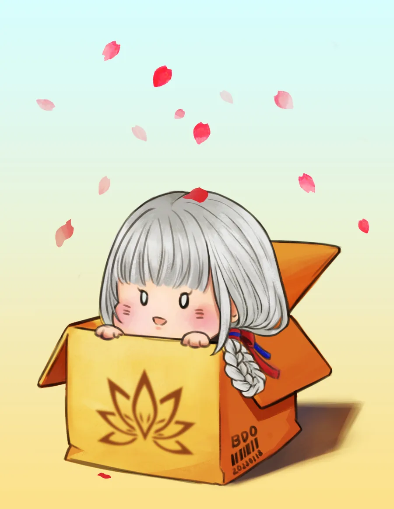
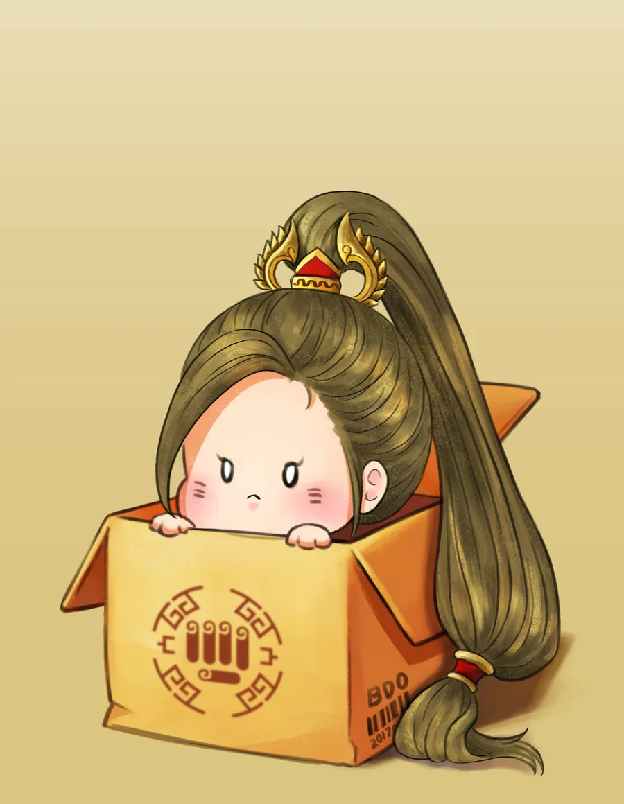
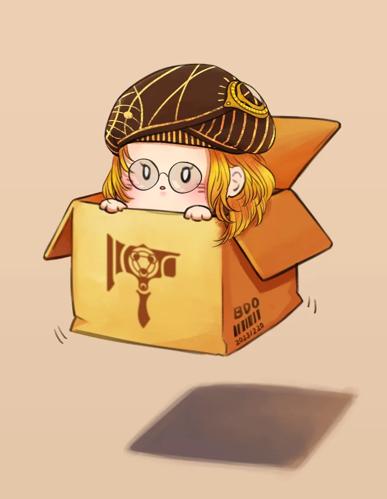
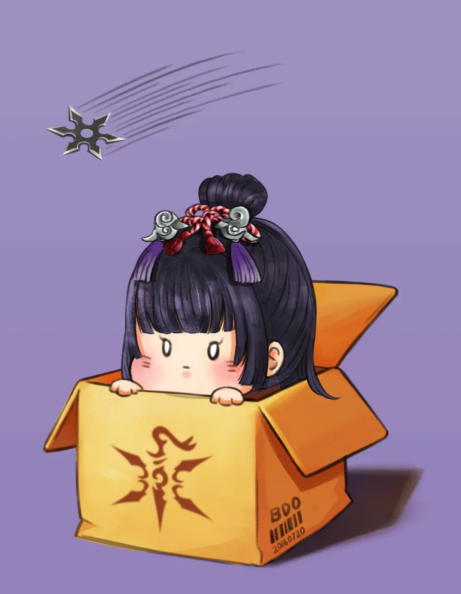

Black Desert Online
Mes classes, où en est mon gear, le prochain world boss et les sites que j'utilise tous les jours.
Voir la pageLiens utiles
Les sites que j'ai toujours ouverts à côté du jeu.
Mes personnages
Dans l'ordre où je les joue.
-

-

-

Scholar Second gear tag
Second gear tag : je la tag uniquement quand je commence à en avoir marre de la Mystic.
-

World boss
Serveur EU, mis à jour tout seul (Garmoth).
Screens
Clique sur une image pour l'agrandir.